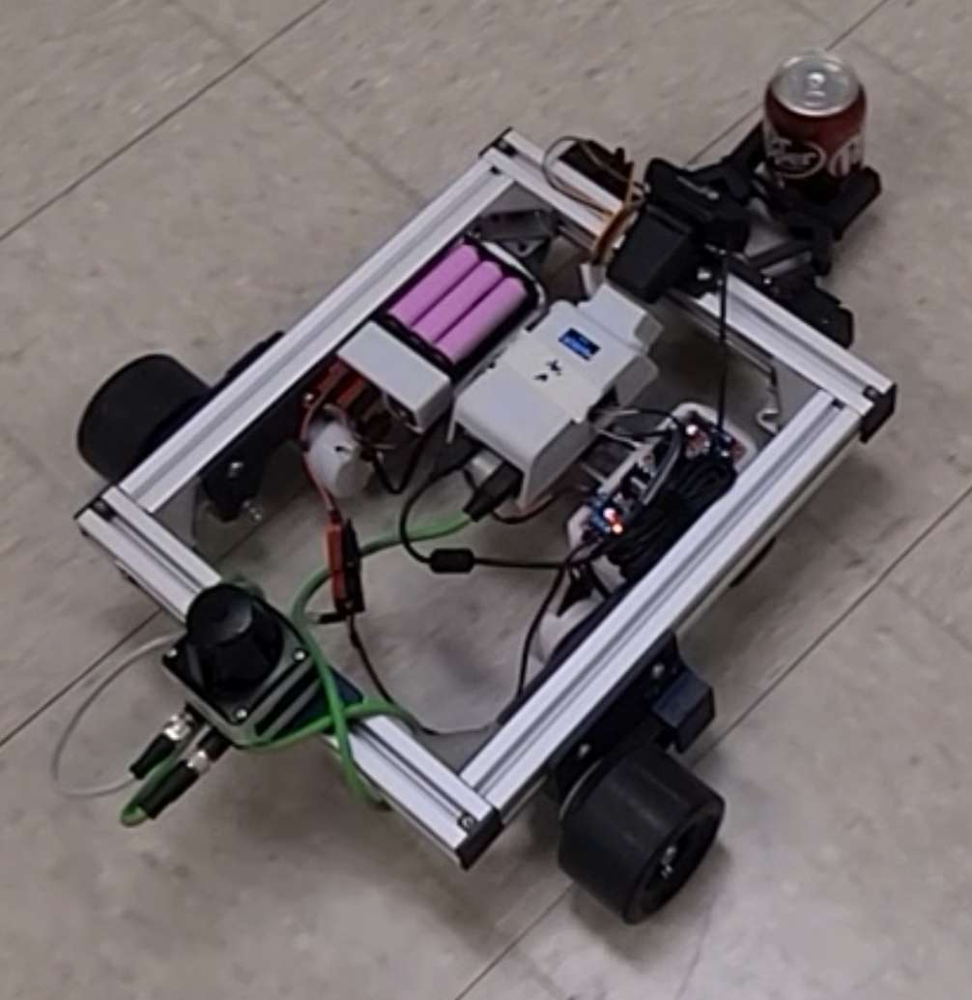

SCUTTLE Soda Retriever
An autonomous mobile robot that searches a room, identifies a target soda can, navigates to it, and picks it up, using LiDAR-based path planning and computer vision.
[SCUTTLE voxelized map when placed between two obstacles]
Team project (MXET 300 — Mechatronics I). My contribution: LiDAR voxelization and autonomous path planning.
Motivation
The Final project for Mechatronics I challenged us to integrate sensor calibration, motor control, embedded programming, computer vision, and autonomous navigation into a single working system. Our goal: a SCUTTLE v3 robot that could autonomously search a room for a specific soda can, navigate around obstacles to reach it, pick it up with a custom gripper, and return it to the user.

[SCUTTLE robot holding a can while returning to start]
System Design
The system was built on the SCUTTLE v3 mobile platform (Raspberry Pi 4, omni-directional chassis) with three integrated subsystems developed in parallel by our four-person team:
- Robotic arm — A 3D-printed servo-actuated claw gripper with a pitch mechanism for lifting, driven by two MG996R servos through a PCA9685 I2C driver
- Computer vision — HSV color filtering with PI motion control for centering on and approaching the target can
- Autonomous navigation — LiDAR-based room mapping with voxelized path planning and obstacle avoidance (my contribution)
My Contribution: LiDAR Voxelization & Path Planning
I designed and implemented the autonomous navigation system that allows the robot to intelligently search an unknown room while maintaining awareness of its position:
- Voxelization: LiDAR scans within a ~1 m radius are discretely placed into a 15 cm × 15 cm grid. Each cell is marked empty (safe), full (obstacle), or unknown (unexplored).
- Path generation: If the robot does not see the can, it generates minimal length random paths to the nearest unknown voxel, filtering out any that collide with obstacles (accounting for a 3-voxel robot width). Paths are then shortened by eliminating redundant waypoints.
- Dynamic replanning: After each step in the path, the robot rescans for the soda can (handing off to the vision system if found) and checks for new obstacles, replanning as needed.
- Localization: Heading from a compass and distance from wheel encoders are fused into a global position estimate updated at every step.

[Path planning and optimizing to travel to nearest unknown voxel]
Outcome
The integrated system successfully demonstrated autonomous can detection, approach, grip, and retrieval. The robot could follow planned paths and detect obstacles dynamically.
The main limitation was motor drift — significant differences in wheel speeds caused the robot to deviate from planned paths, and the resulting localization error caused LiDAR readings to overwrite the voxel map incorrectly. While simple paths and local obstacle avoidance worked well, fully autonomous room-scale exploration was unreliable due to this cumulative drift. This was an instructive failure, it highlighted the importance of closed-loop localization (e.g., SLAM) over dead reckoning for real autonomous navigation.